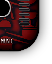
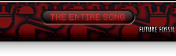

{% extends secondary.html %}

{% block sidebar %}
		{% end %}
{% block content %}
<p></p>
<h2>
<a href="/segment_selection"></a>
</h2>
<p></p>

<fieldset>
        <span class="errormessage"></span>
</fieldset>
<form enctype="multipart/form-data" action="/segment_selection" method="post">
<table class="secondary">

{% for track in tracks_by %}
<tr><td><h3>{{ track.track_details['artist'] }}</h3></td></tr>
<tr><td>{% for line in track.track_details['lyrics'].splitlines() %}
			{{ line }} <br/>
		{% end %}</td></tr>
<tr><td>{% for line in track.track_details['story'].splitlines() %}
			{{ line }} <br/>
		{% end %}</td></tr>
<tr><td>
<!-- Start Major Glitch Player -->
<div id="Major_Glitch_Table">
	<div id="Major-Glitch-Player-01">
		
	</div>
	<div id="Major-Glitch-Player-02">
		
	</div>
	<div id="Major-Glitch-Player-03">
		<!-- start player -->
		

		<div class="sm2-bar-ui compact">

		 <div class="bd sm2-main-controls">

		  <div class="sm2-inline-element sm2-button-element">
		   <div class="sm2-button-bd">
			<a href="#play" class="sm2-inline-button play-pause">Play / pause</a>
		   </div>
		  </div>

		  <div class="sm2-inline-element sm2-inline-status">

		   <div class="sm2-playlist">
			<div class="sm2-playlist-target">
			 <!-- playlist <ul> + <li> markup will be injected here -->
			 <!-- if you want default / non-JS content, you can put that here. -->
			 <noscript><p>JavaScript is required.</p></noscript>
			</div>
		   </div>

		   <div class="sm2-progress">
			<div class="sm2-row">
			<div class="sm2-inline-time">0:00</div>
			 <div class="sm2-progress-bd">
			  <div class="sm2-progress-track">
			   <div class="sm2-progress-bar"></div>
			   <div class="sm2-progress-ball"><div class="icon-overlay"></div></div>
			  </div>
			 </div>
			 <div class="sm2-inline-duration">0:00</div>
			</div>
		   </div>

		  </div>

		  <div class="sm2-inline-element sm2-button-element sm2-volume">
		   <div class="sm2-button-bd">
			<span class="sm2-inline-button sm2-volume-control volume-shade"></span>
			<a href="#volume" class="sm2-inline-button sm2-volume-control">volume</a>
		   </div>
		  </div>

		 </div>

		 <div class="bd sm2-playlist-drawer sm2-element">

		  <div class="sm2-inline-texture">
		   <div class="sm2-box-shadow"></div>
		  </div>

		  <!-- playlist content is mirrored here -->

		  <div class="sm2-playlist-wrapper">
			<ul class="sm2-playlist-bd">
			 <li><a href="/audio/{{ track.filename }}"></a></li>
			</ul>
		  </div>

		 </div>

		</div>

		<!-- end player -->
		
	</div>
	<div id="Major-Glitch-Player-04">
		
	</div>
	<div id="Major-Glitch-Player-05">
		
	</div>
</div>
<!-- End Major Glitch Player -->
</td></tr>
<hr/>
{% end %}
</table>
</form>
{% end %}

